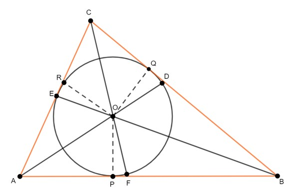
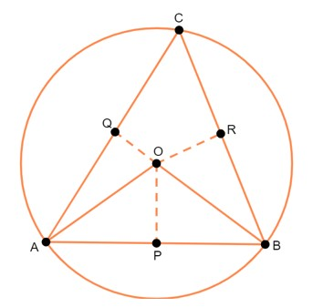
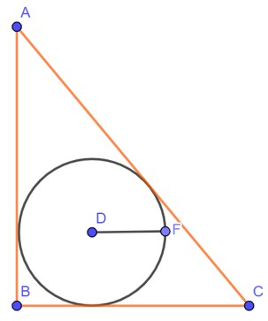
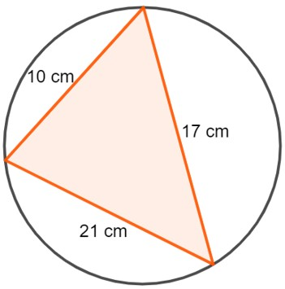
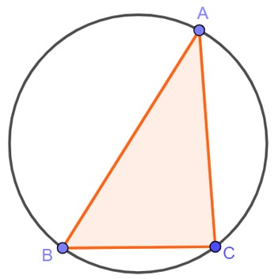

BAB 7
LINGKARAN DALAM DAN LINGKARAN LUAR
Lingkaran dalam suatu segitiga adalah lingkaran yang berada di dalam segitiga dan menyinggung semua sisi segitiga tersebut. Titik pusat lingkaran merupakan titik potong ketiga garis bagi sudut segitiga. Gambar 44. di bawah ini menunjukkan lingkaran dalam ΔABC dengan pusat O. Diketahui OP = OQ = OR adalah jari-jari lingkaran. Adapun AD, BE, dan EF adalah garis bagi sudut segitiga. Perhatikanlah gambar berikut.

Gambar 44. Lingkaran Dalam suatu Segitiga
Adapun cara untuk menentukan jari-jari pada lingkaran dalam suatu segitiga adalah sebagai berikut.
Jika berdasarkan Gambar 44., maka sisinya adalah:
Keterangan:
s = sisi
r = jari-jari
Lingkaran luar suatu segitiga adalah suatu lingkaran yang melalui semua titik sudut segitiga dan berpusat di titik potong ketiga garis sumbu sisi-sisi segitiga. Gambar 45. di bawah ini menunjukkan lingkaran luar ΔABC dengan pusat O. OA = OB = OC adalah jari-jari lingkaran dan OP = OQ = OR adalah garis sumbu sisi-sisi segitiga.

Gambar 45. Lingkaran Luar suatu Segitiga
Adapun cara untuk menentukan jari-jari pada lingkaran luar suatu segitiga adalah sebagai berikut.
Dengan r adalah jari-jari.
Cara untuk menentukan jari-jari pada lingkaran dalam suatu segitiga adalah sebagai berikut.
r = Luas ∆ABC / s
Cara untuk menentukan jari-jari pada lingkaran luar suatu segitiga adalah sebagai berikut.
r = (AB × BC × AC) / (4 × Luas ∆ ABC)
Kerjakanlah soal-soal berikut ini dengan benar!
Perhatikanlah gambar di bawah ini.

Tentukanlah jari-jari pada lingkaran di atas jika diketahui AB tegak lurus BC lalu AB = 20 cm, BC = 15 cm, dan AC = 25 cm.
Tentukanlah jari-jari dari gambar di bawah ini.

Pembahasan:
Jari-jari lingkaran dalam segitiga:
s = ½ (AB + BC + AC) = ½ (20 + 15 + 25) = 60/2 = 30
Luas ∆ ABC = (AB × BC)/2 = (20 × 15)/2 = 150
r = L/s = 150/30 = 5 cm
Setengah keliling segitiga dan luas segitiga berturut-turut adalah:
s = ½ (10 + 17 + 21) = 48/2 = 24
Luas ∆ = √(s(s - a)(s - b)(s - c))
Luas ∆ = √(24(24 - 10)(24 - 17)(24 - 21))
Luas ∆ = √(24(14)(7)(3))
Luas ∆ = √7056 = 84
Jari-jari lingkaran luarnya yaitu:
R = abc/4L = (10 × 17 × 21)/(4 × 84) = 10,625 cm
Kerjakanlah soal-soal berikut ini dengan benar!
Perhatikanlah gambar di bawah ini.

Jika diketahui bahwa panjang AB = 10 cm, BC = 6 cm, dan AC = 8 cm (Tripel Phytahoras), tentukan perbandingan jari-jari lingkaran dalam dan lingkaran luar dari gambar di atas!